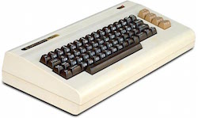
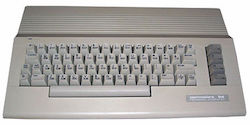
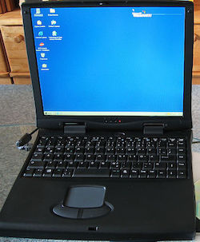
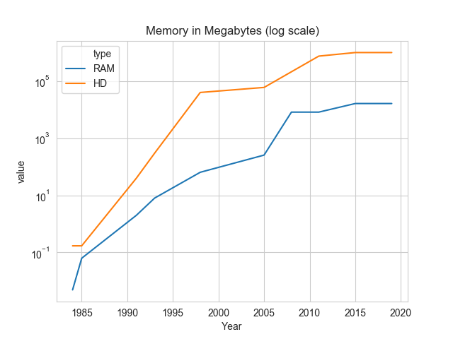
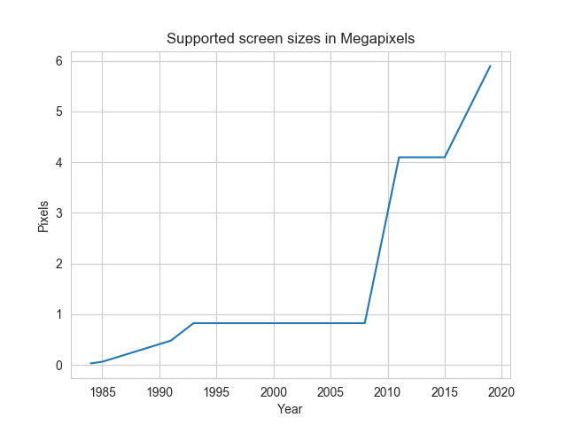

| Date | Machine | CPU | RAM | Secondary storage | Graphics/GPU | ||
|  | 1985 | Commodore VIC-20 | MOS 6510, 8bit, 1Mhz | 5Kb | Dataset (tape), then floppy drive C1541, 170kb |
176x184 pixels 22x23 characters No GPU :) |
|
|  | 1985-1991 | Commodore 64 | MOS 6510, 8bit, 1Mhz | 64Kb | Floppy drive C1541, 170kb |
320x200pixels, 16colors (2 colors in each 8x8) | |
|
|
1991-1993 | PC | Intel 386-SX, 20Mhz 32bit(16bit bus) | 2MB, then 5MB | HD, 40MB | 800x600 pixels. | |
|
|
1993-1994 | PC | AMD 486DX2-80, 80Mhz | 8MB | HD, ~300MB(?) | 1074x768 pixels. | |
|  | 1998-2003 | Gericom 1100AT | Intel Pentium MMX 300 Mhz | 64MB EDO RAM | HD 3.2GB |
S3 Virge/MX (86C260), 4 MB RAM 1074x768 pixels |
|
| 2005 | ASUS M2400N | Intel Pentium M 1.3 GHz | 256MB | HD 40GB | 1074x768 pixels | ||
| 2005-2008 | DELL D610 | Intel Pentium M, 2Ghz | 1GB | HD 60GB | 1074x768 pixels | ||
| 2008-2011 | DELL D660 | Intel Core 2 | 4GB | HD ?? | 1074x768 pixels | ||
| 2011-2015 | Macbook pro 13", Late 2011 | Intel i7, 2.8Ghz, 2 cores | 8GB, 1333 Mhz, DDR3 | HD, 750GB |
1280x800 pixels (internal), 2560x1600 pixels (external) |
||
| 2015-2019 | Macbook pro 15", Mid 2015 | Intel i7, 2.8Ghz, 4 cores (Haswell), 64bit | 16GB, 1600 Mhz | SSD, 1TB |
2560 x 1600 pixels (internal) GPU AMD Radeon R9 M370X, 2GB GDDR5; 640 shaders, 72GB/s |
||
| 2019-now | Macbook pro 16", Late 2019 | Intel i9, 2.3Ghz, 8 cores, 64bit | 16GB, 2666 Mhz | SSD, 1TB |
3072 x 1920 pixels (internal) GPU AMD Radeon 5500M, 4GB GDDR6; 1536 Shaders; 4.6 TFOPs; |
The evolution of main memory (RAM), secondary storage (floppy then HD then SSD) and screen size in mega pixels over time:
 